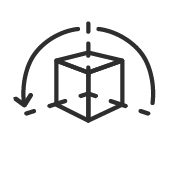
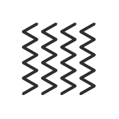
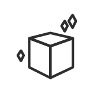

Voorwoord
3D Visuals zie je steeds meer op verschillende plekken. Naast dat het op dit moment een veelvoorkomend iets is leek het mij een mooie toevoeging op mijn huidige skill set. Met het werken in 3D krijg je met veel verschillende dingen te maken zoals andere denkprocessen, belichting en textuur. Mijn eigen visuals kunnen maken leek mij ook heel erg vet.